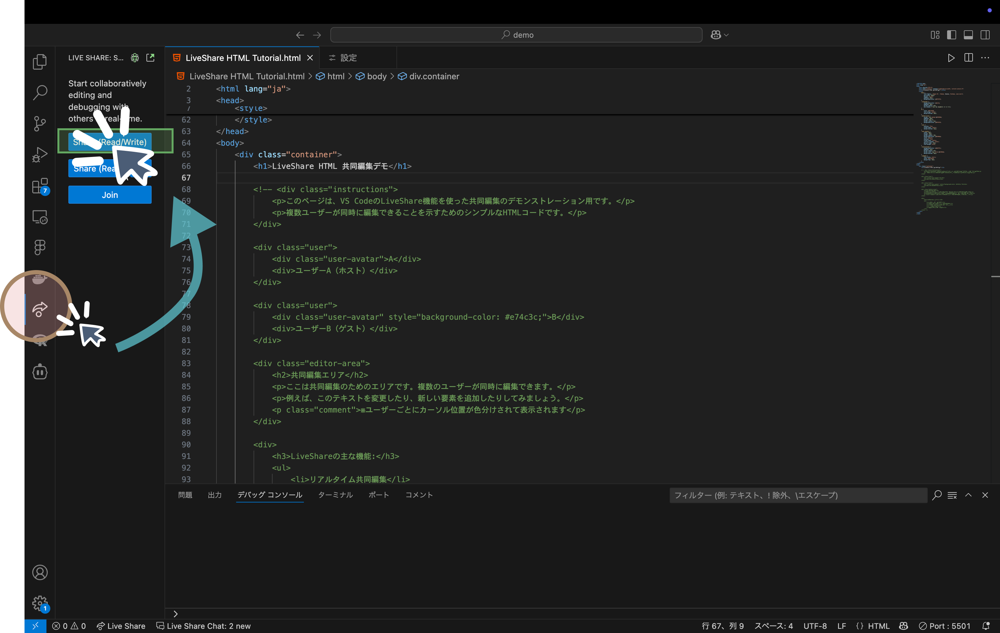
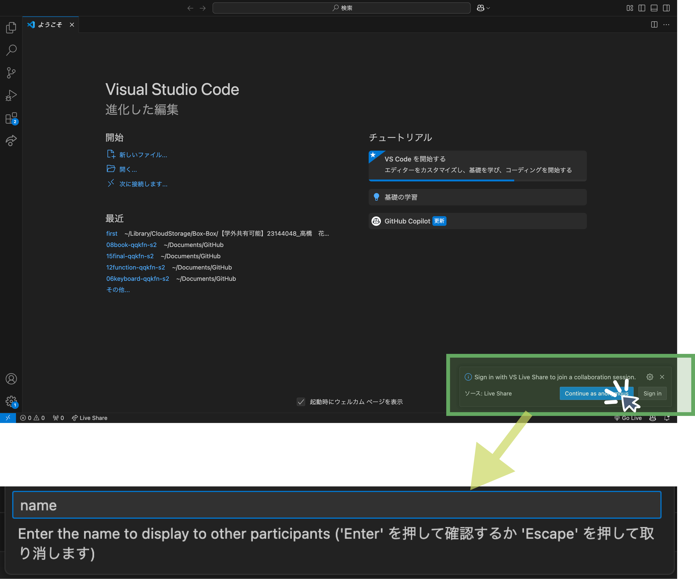

Home
VSCode 拡張機能で始めるWeb開発 - Live Share編
Live Shareの使用
Live Shareは、VSCodeの拡張機能で、リアルタイムでコードを共有し、共同作業を行うことができます。
1.Live Shareのインストール
- VSCodeを開きます。
- 左側の拡張機能アイコンをクリックします。
- "Live Share"と検索し、インストールします。
2.使用方法-ホスト側
- Live Shareを開始するには、左のLive Shareアイコンをクリックします。
- ホストを開始するには、"Share(Read/Write)"をクリックします。

- invite participationを選択するとコピーされるリンクを参加者に共有
- ここで live Serverという部分も確認しておきましょう。参加者に共有できているはずです。
- 参加者が参加したらこんな表示が出てきます。Read-Whiteを許可しましょう
- ホスト側の操作はこれで終了です。
- ホストを終了するには、Stop Collaboration Sessionボタンを押します。
3.使用方法-ゲスト側
- ホストから送信されたリンクをクリックします。
- VSCodeを開き、joinしましょう
※人によって挙動が違う可能性があります。

- ホストの承認を待ちます...
- 承認されるとホストのコードが表示され、リアルタイムで編集できます。
※ホストの挙動を追ってしまっている場合は下記のどちらかで対処しましょう。
- 上部青い表示→管理→信頼
- 左の live Shareのアイコンをクリックしてホストの名前を右クリック→ Unfollowを選択
- ゲスト側が live-serverのプレビューを参照したい場合は、ホストがserverを利用していることを確認して、Shared ServerからLive Serverにアクセスします。
- ゲスト側もこれにて操作は終了です
これで、リアルタイムでコードを共有しながら共同作業ができます。
まとめ
Live Shareを使用することで、リアルタイムでコードを共有し、共同作業を行うことができます。これにより、リモートでのコラボレーションが容易になります。
このマニュアルを参考にして、Live Shareを活用してみてください。
※この使用方法は一例です。自身が使いやすいような共有方法を調べながら試してみましょう。